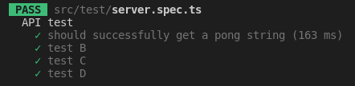

Testing
Yubin, Hsu
Why test
Check
Quality
Confidence
Why we write test
Automation
Documentation
how our code should work

How
Golden Rule
design a test case to be
- simple
- short
- abstraction-free
- flat
- delightful to work with
The test
test name
- What is being tested?
- What scenario?
- What is the expected result?
// 1. unit under test
describe('Products Service', function() {
describe('Add new product', function() {
// 2. scenario and 3. expectation
it('When no price is specified, then the product status is pending approval', ()=> {
const newProduct = new ProductService().add(...);
expect(newProduct.status).to.equal('pendingApproval');
});
});
});
AAA pattern
Arrange
Act
Assert
describe("Customer classifier", () => {
test("When customer spent more than 500$, should be classified as premium", () => {
//Arrange
const customerToClassify = { spent: 505, joined: new Date(), id: 1 };
const DBStub = sinon.stub(dataAccess, "getCustomer").reply({ id: 1, classification: "regular" });
//Act
const receivedClassification = customerClassifier.classifyCustomer(customerToClassify);
//Assert
expect(receivedClassification).toMatch("premium");
});
});
Use product language
code the expectation in a human-like language
expect(myValue > 5).toBe(true)
expect(myValue).toBeGreaterThan(5) // better to read
Test public methods
Don’t “foo”, use real input data
Make each test case independent
global test fixture
No catch, expect them
it('should return 200 status code when call /api/todos API', async() => {
try {
const response = await axios.get('/api/todos')
expect(response.status).toBe(200)
} catch(error) {
fail(`${error}`)
}
})
↓
it(' should return 200 status code when call /api/todos API', async() => {
const response = await axios.get('/api/todos')
expect(response.status).toBe(200)
})
Types of tests
- End-to-End, simulate user behavior
- Integration, multiple units work together
- Unit, single function/component
- Static, code typo or error

TestPyramid

Choose a Test Framework
Vitest
Blazing Fast Unit Test Framework
Vitest Install
npm install -D vitest
npm install -D @vitest/coverage-c8
Vitest Config
create vitest.config.ts
import { defineConfig } from 'vitest/config'
export default defineConfig({
test: {}
})
npm script
"test": "vitest run --coverage"
A Test
import { describe, test, expect } from 'vitest'
const expected = true
const actual = false
describe('my test suite01', () => {
test('it works', () => {
expect(actual).toBe(expected)
})
})

describe("API test", () => {
it("should successfully get a pong string", () => {
// Some testing condition
});
it("test B", () => {});
it("test C", () => {});
it("test D", () => {});
});

Expect
https://vitest.dev/api/expect.html
expect(1 + 2).toBeLessThan(4);
expect(1 + 2).toBeLessThanOrEqual(3);
expect(["A", "B", "C"]).toContain("B");
expect(1 + 2).not.toBe(4);
Synchronous
describe("Math test", () => {
it("1 + 2 should be 3", () => {
const a = 1;
const b = 2;
expect(a + b).toBe(3);
});
});
Asynchronous
// pong.ts
async getPong(): Promise<string> {
return new Promise((resolve) => {
resolve('pong')
})
}
// pong.spec.ts
describe('asynchronous test', () => {
it('get pong', async () => {
const result = await pong.getPong()
expect(result).toBe('pong')
})
it('still get pong', async () => {
await expect(pong.getPong()).resolves.toBe('pong')
})
})
Report
Test Report
Coverage Report
Property Based Testing
Properties, Not Examples
Fast Check

import fc from 'fast-check'
describe('Product service', () => {
describe('Adding new', () => {
//this will run 100 times with different random properties
it('Add new product with random yet valid properties, always successful', () =>
fc.assert(
fc.property(fc.integer(), fc.string(), (id, name) => {
expect(addNewProduct(id, name).status).toEqual('approved')
})
))
})
})
Snapshot Testing
Make sure the output of your functions does not change unexpectedly.
import { render } from '@testing-library/react'
import YourComponent from 'YourComponent'
it('The component UI should not change', () => {
const comp = render(<YourComponent />)
expect(comp).toMatchSnapshot()
})
Contract testing
Contract testing is a methodology for ensuring that two separate systems (such as two microservices) are compatible and can communicate with one other.

Mutation Testing
Mutation testing introduces changes to your code, then runs your unit tests against the changed code.
Stryker

Testing Library
@testing-library/react
https://github.com/testing-library/react-testing-library
üêê Simple and complete React DOM testing utilities that encourage good testing practices.
@testing-library/user-event
https://github.com/testing-library/user-event
üêï Simulate user events
import {render, screen} from '@testing-library/react'
import userEvent from '@testing-library/user-event'
import Fetch from './fetch'
test('loads and displays greeting', async () => {
// arrange
render(<Fetch url="/greeting" />)
// act
await userEvent.click(screen.getByText('Load Greeting'))
await screen.findByRole('heading')
// assert
expect(screen.getByRole('heading')).toHaveTextContent('hello there')
expect(screen.getByRole('button')).toBeDisabled()
})
https://testing-library.com/docs/react-testing-library/example-intro/#full-example
Cypress
Cypress
https://github.com/cypress-io/cypress
Fast, easy and reliable testing for anything that runs in a browser.
describe("My First Test", () => {
it("Gets, types and asserts", () => {
cy.visit("https://example.cypress.io");
cy.contains("type").click();
// Should be on a new URL which
// includes '/commands/actions'
cy.url().should("include", "/commands/actions");
// Get an input, type into it and verify
// that the value has been updated
cy.get(".action-email")
.type("fake@email.com")
.should("have.value", "fake@email.com");
});
});
Reference
Thx.